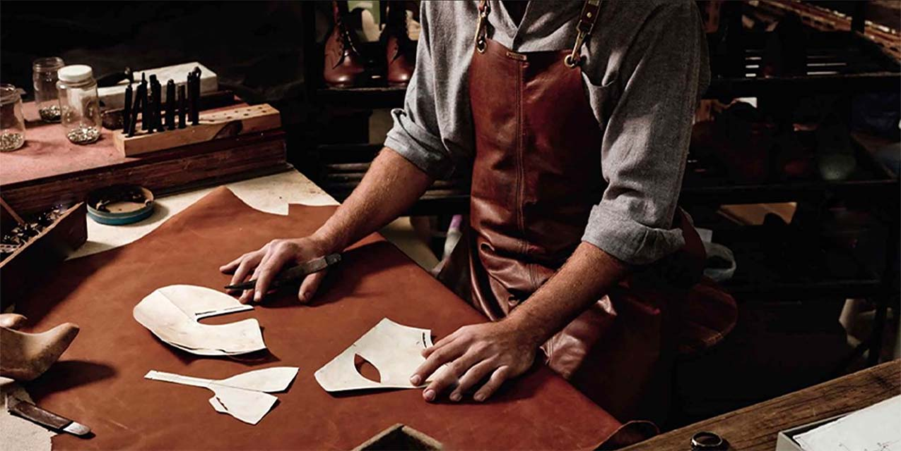
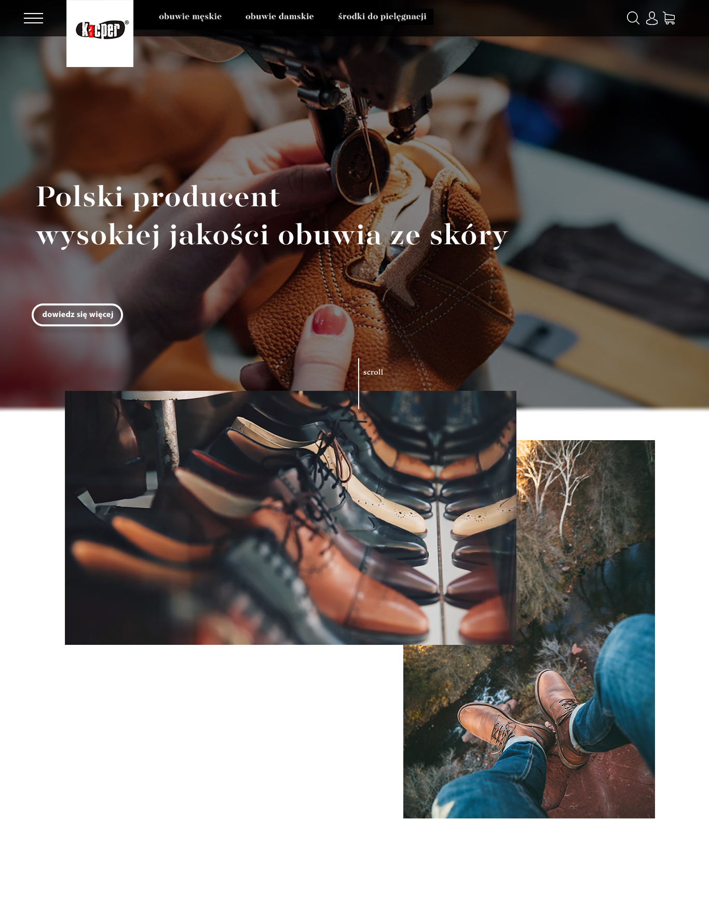
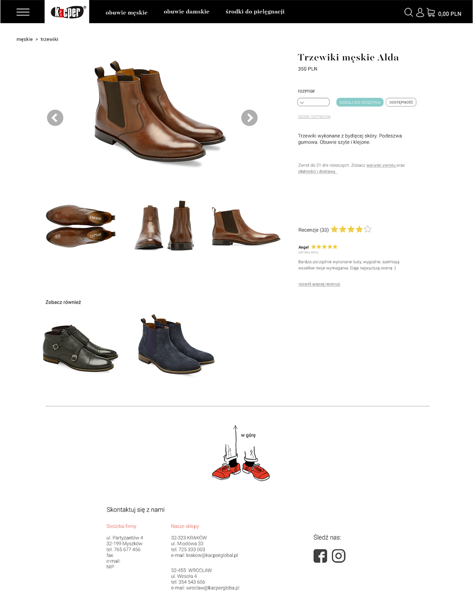
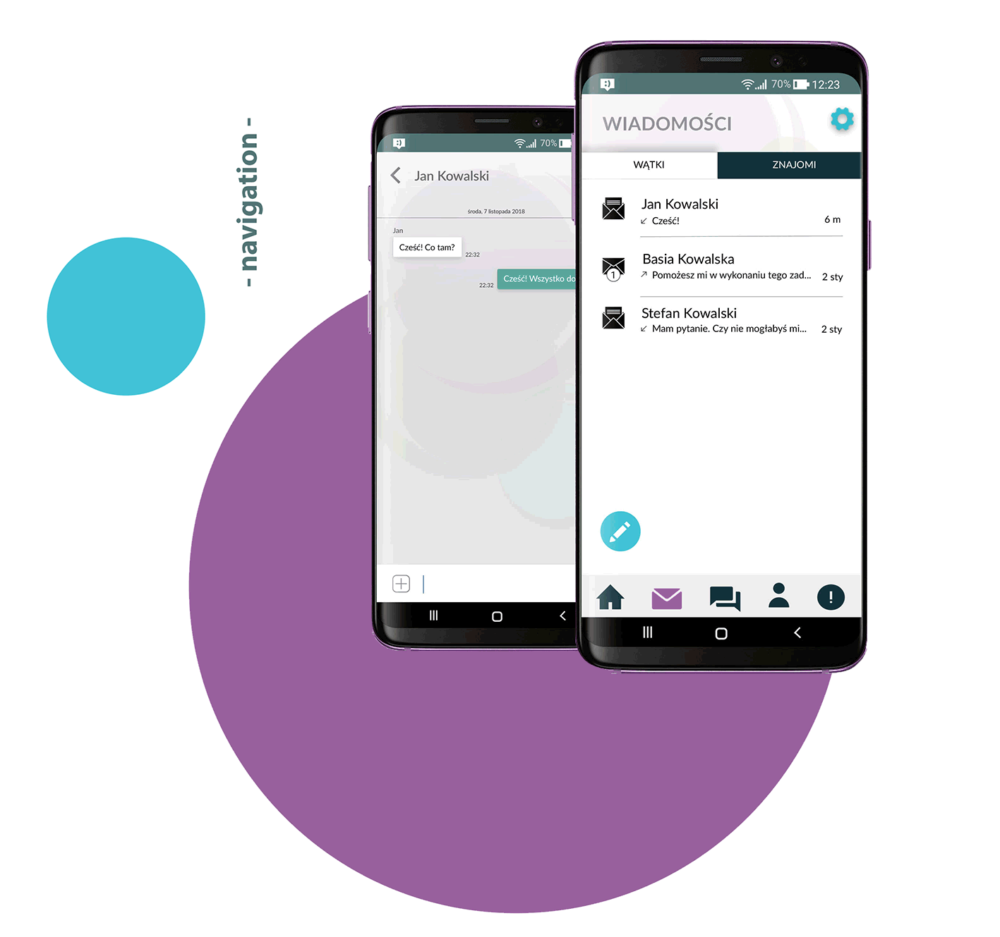
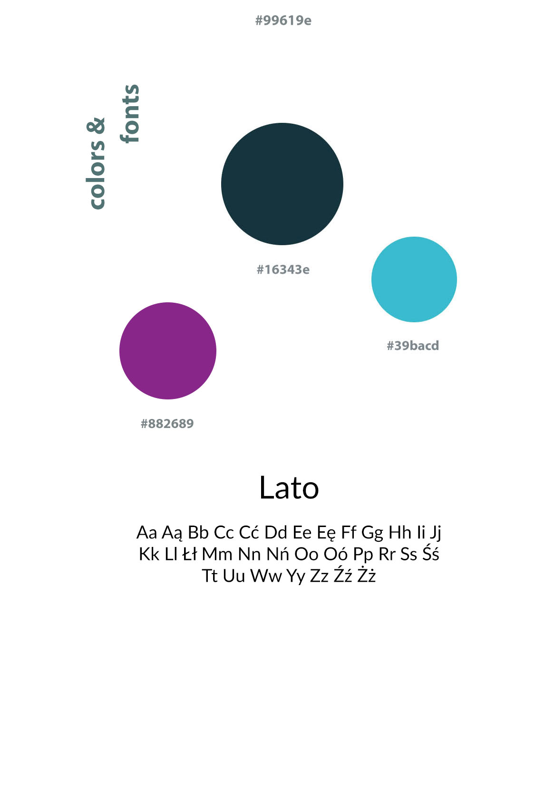

o mnie
web design

scroll
Koncepcja sklepu internetowego
dla producenta obuwia
Koncepcja sklepu internetowego
dla producenta obuwia
Polska firma "Kacper Global", produkująca wygodne, skórzane obuwie, posiada sklep internetowy, który moim zdaniem wymaga odświeżenia. Z tego powodu zdecydowałam się zaprojektować nową witrynę, która byłaby przejrzysta, nowoczesna i przyjazna dla użytkownika.
Zaproponowany przeze mnie layout jest nieskomplikowany, wiele w nim przestrzeni. Ozdobą strony są zdjęcia wykonane podczas procesu produkcji obuwia, mające na celu zatrzymanie uwagi i zaciekawienie klienta. Kolorystyka strony została zredukowana do białego, czarnego, szarego oraz brązowego. Głównymi założeniami projektu była przejrzystość i przystępność, tak by klient zamawiający obuwie mógł w prosty sposób poruszać się po stronie.
Polska firma "Kacper Global", produkująca wygodne, skórzane obuwie, posiada sklep internetowy, który moim zdaniem wymaga odświeżenia. Z tego powodu zdecydowałam się zaprojektować nową witrynę, która byłaby przejrzysta, nowoczesna i przyjazna dla użytkownika.
Zaproponowany przeze mnie layout jest nieskomplikowany, wiele w nim przestrzeni. Ozdobą strony są zdjęcia wykonane podczas procesu produkcji obuwia, mające na celu zatrzymanie uwagi i zaciekawienie klienta. Kolorystyka strony została zredukowana do białego, czarnego, szarego oraz brązowego. Głównymi założeniami projektu była przejrzystość i przystępność, tak by klient zamawiający obuwie mógł w prosty sposób poruszać się po stronie.


Previous
Next
kolejny projekt
projekt aplikacji
dla Publishing School w Krakowie
projekt aplikacji
dla Publishing School w Krakowie
Projekt aplikacji dla Publishing School w Krakowie jest kolejnym krokiem w stronę usprawnienia komunikacji pomiędzy studentami i wykładowcami. W swoim założeniu pozwala ona na wymienianie wiadomości pomiędzy zalogowanymi użytkownikami, korzystanie z forum, czytanie najnowszych szkolnych newsów oraz dodawanie przez wykładowców zadań, których studenci mogą się podjąć.
Cała aplikacja utrzymana jest w jasnych barwach, a kolory dodatkowe są stonowane i nawiązują do loga szkoły. Zaprojektowana została z wykorzystaniem założeń UI, tak by korzystanie z niej było intuicyjne i przyjemne. U dołu znajduje się pasek nawigacji, dzięki któremu dostęp do kolejnych podstron jest prosty.
Projekt aplikacji dla Publishing School w Krakowie jest kolejnym krokiem w stronę usprawnienia komunikacji pomiędzy studentami i wykładowcami. W swoim założeniu pozwala ona na wymienianie wiadomości pomiędzy zalogowanymi użytkownikami, korzystanie z forum, czytanie najnowszych szkolnych newsów oraz dodawanie przez wykładowców zadań, których studenci mogą się podjąć.
Cała aplikacja utrzymana jest w jasnych barwach, a kolory dodatkowe są stonowane i nawiązują do loga szkoły. Zaprojektowana została z wykorzystaniem założeń UI, tak by korzystanie z niej było intuicyjne i przyjemne. U dołu znajduje się pasek nawigacji, dzięki któremu dostęp do kolejnych podstron jest prosty.

